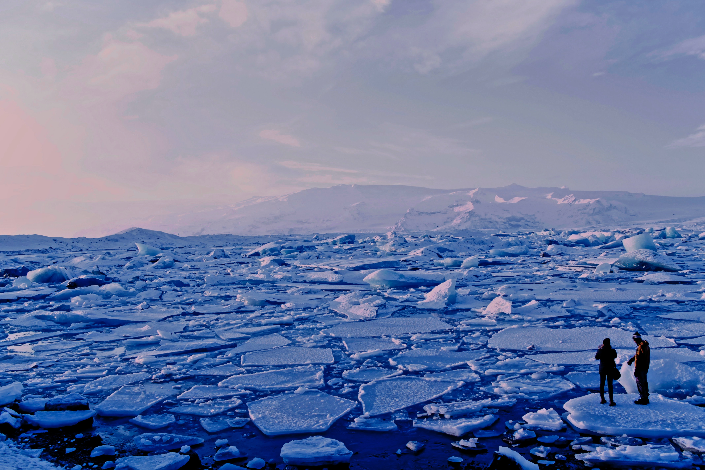

Global warming is the long-term heating of Earth’s climate system observed since the pre-industrial period (between 1850 and 1900) due to human activities, primarily fossil fuel burning, which increases heat-trapping greenhouse gas levels in Earth’s atmosphere. The term is frequently used interchangeably with the term climate change, though the latter refers to both human- and naturally produced warming and the effects it has on our planet. It is most commonly measured as the average increase in Earth’s global surface temperature.
Since the pre-industrial period, human activities are estimated to have increased Earth’s global average temperature by about 1 degree Celsius (1.8 degrees Fahrenheit), a number that is currently increasing by 0.2 degrees Celsius (0.36 degrees Fahrenheit) per decade. It is unequivocal that human influence has warmed the atmosphere, ocean, and land.